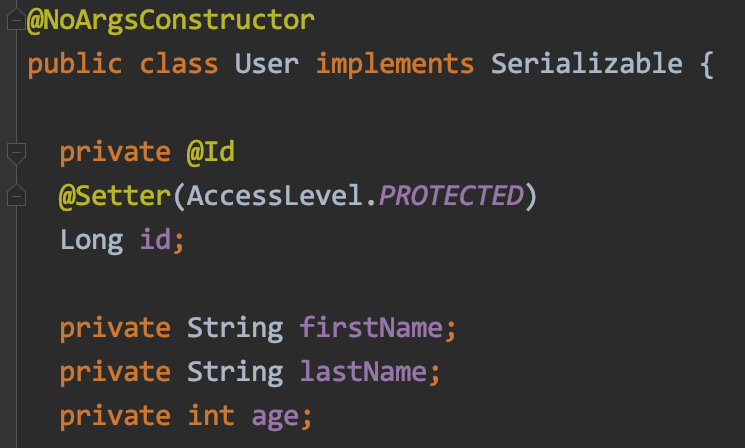
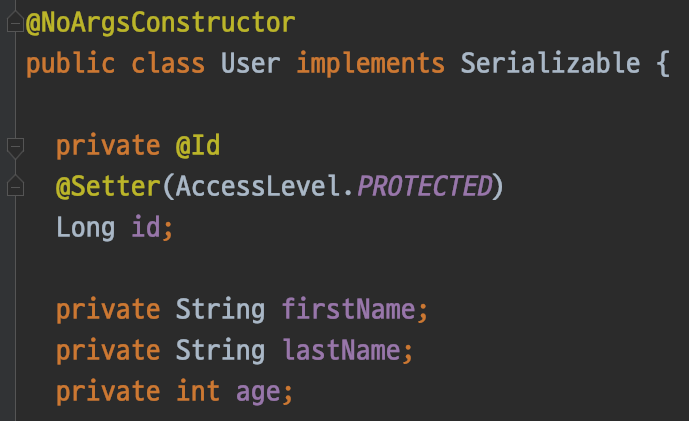
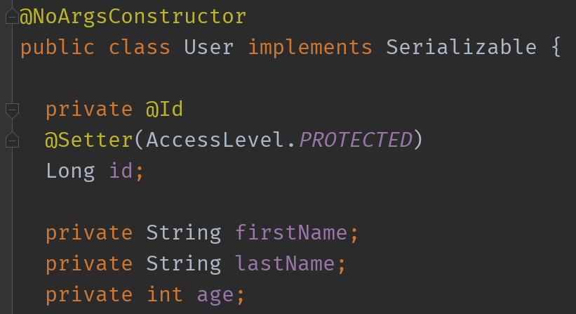
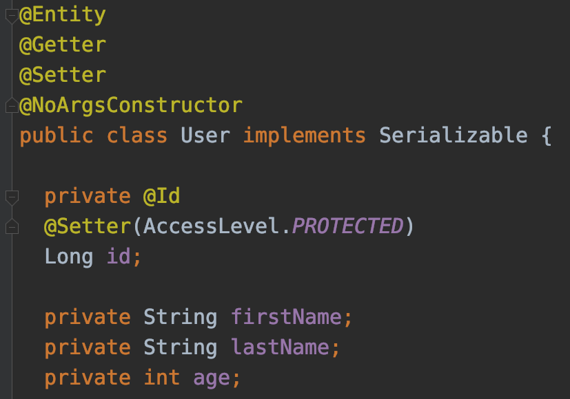
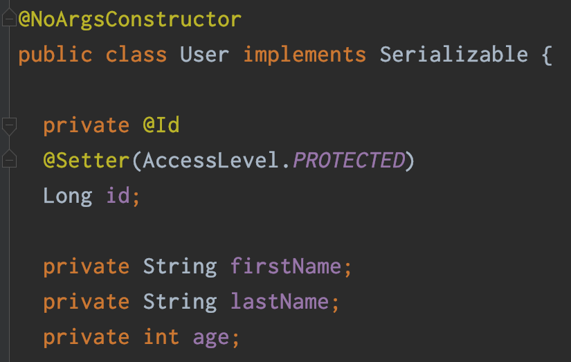
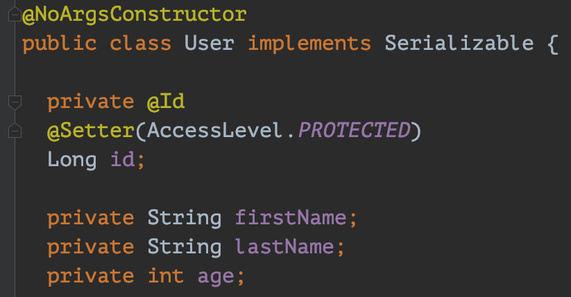
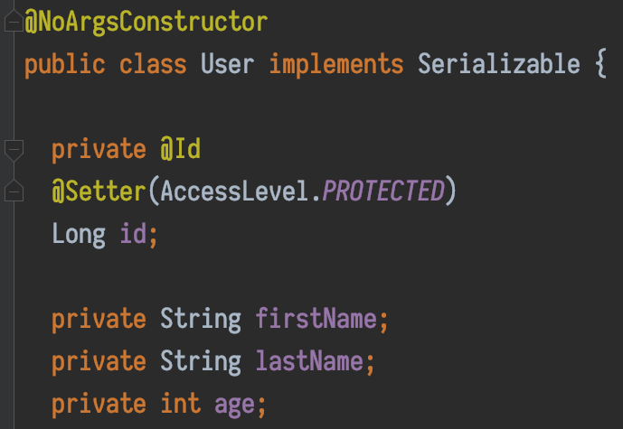
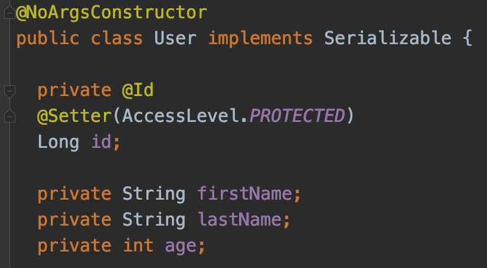

최고의 프로그래밍 폰트는?
하루 종일 화면을 들여다보며 키보드를 두드리는 개발자에게 빠질 수 없는 것 중 하나가 프로그래밍 폰트(개발용 폰트)입니다. 프로그래밍 폰트는 각 문자의 폭이 일정한 고정폭 글꼴(Monospaced font)을 기반으로 헷갈릴 여지가 있는 글자를 없애도록 설계된 폰트입니다. 아래 그림은 일반 굴림체와 프로그래밍 폰트인 Consolas, D2 Coding 폰트를 비교한 표인데요. 굴림체와 달리 프로그래밍 폰트는 숫자 1, 영어 소문자 l, 한글 ㅣ, 특수기호 | 를 구분할 수 있도록 만든 것을 볼 수 있습니다. 숫자 0, 영어 대문자 O, 한글 ㅇ 도 마찬가지입니다. 마침표와 쉼표도 헷갈리기 쉬운 문자 중 하나인데 프로그래밍 폰트는 좀 더 확실하게 차이점을 보여주고 있습니다. 표에는 없지만 Z와 2, S와 5, G와 6 등도 헷갈리기 쉬운 문자입니다.

코드를 작성할 때는 글자, 숫자 하나에 결과가 크게 달라질 수 있고 오타 에러가 발생하면 디버깅하기 힘들기 때문에 대부분의 개발자가 프로그래밍 폰트를 사용합니다. 이번 포스트에서는 제가 좋아하는 프로그래밍 폰트를 (주관적인 순위와 함께) 가볍게 소개해드리려고 합니다.
프로그래밍 폰트와 개발자의 취향
프로그래밍 폰트는 생산성 향상에 필수이면서도 개발자 취향을 많이 탑니다.
주변 개발자들에게 물어보면 이클립스의 기본 폰트인 Consolas 를 쓰는 사람이 제일 많았습니다. Consolas 는 Microsoft 에서 개발해 Windows 에 기본 내장되어 있는 폰트입니다. Consolas 는 한글이 표현되지 않다보니 한글도 잘 표현해주는 D2 Coding 을 쓰는 사람도 많았습니다. 사실 프로그래밍 폰트는 다양하지만 언뜻 보면 비슷비슷해 보이는 것이 사실이라 굳이 새로운 폰트를 사용할 필요를 못느낄 수도 있습니다.

반대로 글씨체를 중요하게 생각하는 개발자도 있습니다. 저도 폰트를 꽤 자주 바꾸는 편입니다. 맨날 보는 화면이라도 테마나 폰트를 바꾸면 기분전환도 되고 집중도 더 잘 되더라구요. 사실 프로그래밍 폰트 외에 각종 에디터, 웹 브라우저도 수시로 폰트를 바꿔가며 사용합니다.
나만의 프로그래밍 폰트 순위 TOP 3
제가 프로그래밍 폰트를 고르는 기준은 얼마나 ‘눈에 잘 들어오는지‘ 입니다. 지금까지 사용해 본 폰트 중에서 제 마음에 든 폰트는 다음과 같습니다.
IBM Plex Mono

1위는 제 최애 폰트인 IBM Plex Mono 입니다. 이름에서 알 수 있듯이 IBM 에서 만든 폰트로 IBM Plex 폰트 중 모노스페이스 폰트입니다. 돋움체(Sans-Serif) 같은 느낌의 폰트 중에서도 단연 눈에 띄는 시원시원한 바탕체(Serif) 스타일의 폰트입니다. 특히 한껏 꺾인 중괄호(Brace, {})가 매력 포인트입니다. 현재 이 블로그에서 코드를 표현할 때 사용하는 폰트이기도 합니다.
Hack

2위는 Hack 입니다. Hack 은 Source Foundry 에서 만든 오픈 소스 폰트로 Bitstream Vera 와 DejaVu 폰트를 기반으로 만들어졌습니다. 전체적으로 부드럽고 둥글둥글하며 각 글자의 너비가 적당해서 가독성이 높아서 선호합니다. IBM Plex Mono 를 사용하기 전까지 주로 사용한 폰트입니다.
Source Code Pro

3위는 Source Code Pro 입니다. Adobe 에서 만든 오픈 소스 폰트인데요. 너비가 넓고 글자 사이의 간격이 넓어 답답하지 않고 눈에 잘 들어옵니다. 한 때 많이 사용했지만 다른 폰트에 비해 화면에 들어오는 코드가 적기 때문에 불편할 때가 종종 있습니다.
(번외) D2 Coding

D2 Coding 은 네이버에서 나눔바른고딕을 기반으로 만든 프로그래밍 폰트입니다. 영문자 뿐만 아니라 한글과도 조화롭고 비슷한 글자도 확실하게 구분한 폰트입니다. 그래서 한글 주석이 많거나 fallback 폰트로 사용합니다. 외국 폰트의 경우 한글을 지원하지 않는 경우가 많아 fallback 폰트로 지정해놓으면 한글만 D2 Coding 으로 나오게 됩니다. 사실 한글을 지원하는 프로그래밍 폰트 자체가 많지 않기 때문에 선택지가 (거의) 없습니다. 그래서 Consolas 에 맑은 고딕을 추가해서 사용하는 분들도 있다고 하네요.
이 외에 인기 있는 폰트
좀 더 알아볼까요? 저는 잘 사용하지 않지만 개발자들이 주로 사용하는 폰트는 다음과 같습니다. 한 번 쭉 보시고 마음에 드는 폰트가 있으면 써보셔도 좋을 것 같습니다. 저는 Anonymous Pro 와 Red Hat 에서 만든 Liberation Mono 에 눈이 가네요.
Fira Code

DejaVu Sans Mono

Inconsolata-g

Ubuntu Mono by Ubuntu

Anonymous Pro

M+

PT Mono

Liberation Mono by Red Hat

Iosevka

Menlo by Apple

Monaco by Apple

Meslo LG

Meslo LG 는 Apple 의 Menlo 를 커스터마이징한 폰트입니다.
당신의 폰트는 무엇인가요?
여러분이 좋아하는 프로그래밍 폰트는 무엇인가요? 댓글에 남겨주시면 리스트에 추가하도록 하겠습니다. 감사합니다!
Related Posts
- [variety-of-markdown-and-Implementations]
- [hexo-change-font-face-no-cdn]
- [medium-writing-paradigm-shift]
- [metasyntactic-variables-foo-bar]
최고의 프로그래밍 폰트는?